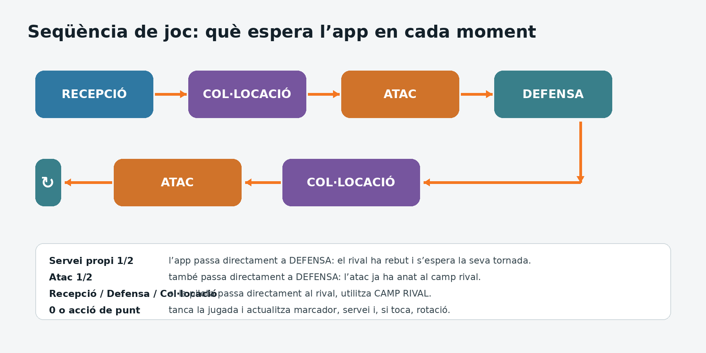

La pantalla funciona com una màquina d’estats: ACCIÓ ACTUAL indica què espera que valoris. Toca la jugadora que ha fet l’acció i el valor que correspon.
- Mira ACCIÓ ACTUAL: Servei, Recepció, Defensa, Col·locació, Atac o Salvada.
- Valora la jugadora: prem 0, 1, 2 o 3 al seu quadrant. En servei només està habilitada la jugadora de zona 1.
- No anotis manualment un punt normal: Ace, atac punt, bloqueig punt i errors terminals ja actualitzen el marcador.
- Segueix la seqüència: normalment Recepció/Defensa → Col·locació → Atac.
- Si la jugada se salta una fase: toca ACCIÓ ACTUAL per avançar manualment un únic pas, sense crear cap estadística ni punt.
- Si la pilota passa al rival abans d’hora: prem Camp rival quan estigui habilitat.
- Si una R/D = 0 però una altra jugadora salva: prem SOS i valora la Salvada amb 1, 2 o 3.
- Si t’equivoques: prem Desfer. L’etiqueta indica què desfarà.

Regla d’or. No intentis forçar una jugada real perquè encaixi en la seqüència. Utilitza ACCIÓ ACTUAL per saltar una fase, o Camp rival, SOS/Salvada, Bloqueig, punts manuals o Desfer quan correspongui.